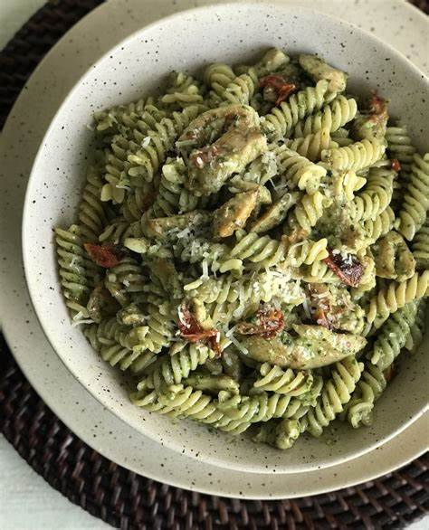

Pesto Pasta Recipe
Back to Main Menu

Description
Pesto Pasta with chicken breast and broccoli! Super easy and healthy - this is
what I survived off when I was studying abroad in the summer of 2024.
Ingredients
- Pasta (I like Barilla Fusilli)
- Jarred Pesto Sauce
- Chicken Breast
- Broccoli
- Fresh Parsley (optional)
- Salt and Pepper
- Garlic
- Cheese (optional)
Instructions
- Start boiling two pots of water.
- Cut up the chicken into bite sized pieces and then pan fry
them in some neutral oil. Season with salt and pepper. When cooked through, set aside.
- Start cooking your pasta to al dente.
- Cut up your broccoli and boil for 4 minutes.
- Once that is all done, start sauteing some garlic in a large pan.
- Throw your pasta in there and then throw the chicken and brocolli in. Put in some jarred pesto sauce.
- Saute for a few more minutes and you're done! Garnish with optional parsley and cheese.